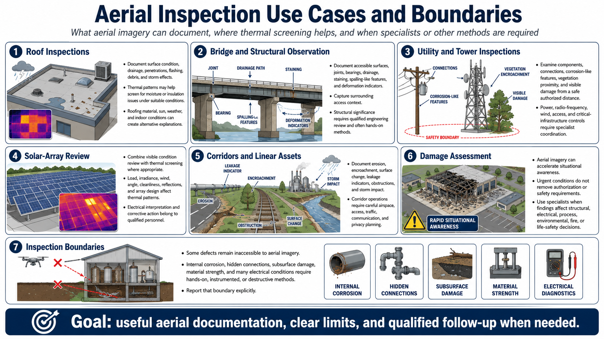

Common Inspection Use Cases
Connecting to LMS... Progress: in progress

Narration
Roof inspections can document surface condition, drainage, penetrations, flashing, debris, and storm effects. Thermal patterns may support moisture or insulation screening under suitable conditions, but roofing material, sun, weather, and indoor conditions create alternatives.
Bridge and structural observation can document accessible surfaces, joints, bearings, drainage, staining, spalling-like features, deformation indicators, and surrounding access. Structural significance requires qualified engineering review and often hands-on methods.
Utility and tower inspections may examine components, connections, corrosion-like features, vegetation proximity, or visible damage from a safe authorized distance. Power, radio-frequency, wind, access, and critical-infrastructure controls require specialist coordination.
Solar-array review combines visible condition with thermal screening where appropriate. Load, irradiance, wind, angle, cleanliness, reflections, and array design affect patterns. Electrical interpretation and corrective action belong to qualified personnel.
Pipeline, road, rail, water, and industrial-corridor observation can document erosion, encroachment, surface change, leakage indicators, obstructions, or storm impact. Corridor operations require careful airspace, access, traffic, communication, and privacy planning.
Damage assessment can accelerate situational awareness, but urgent conditions do not remove authorization or safety requirements. Use specialists when findings affect structural, electrical, process, environmental, fire, or life-safety decisions.
Some defects remain inaccessible to aerial imagery. Internal corrosion, hidden connections, subsurface damage, material strength, and many electrical conditions require hands-on, instrumented, or destructive methods. Report that boundary explicitly.